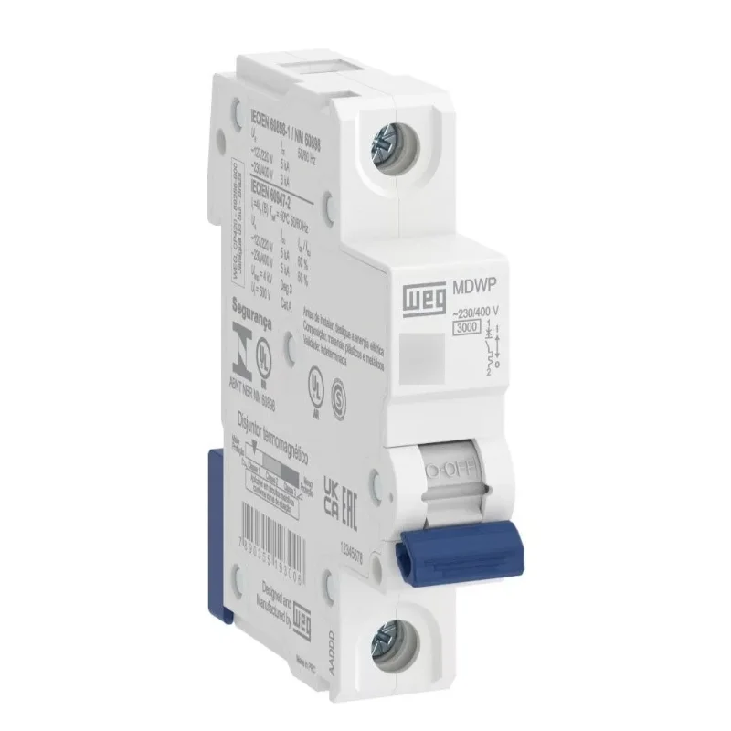
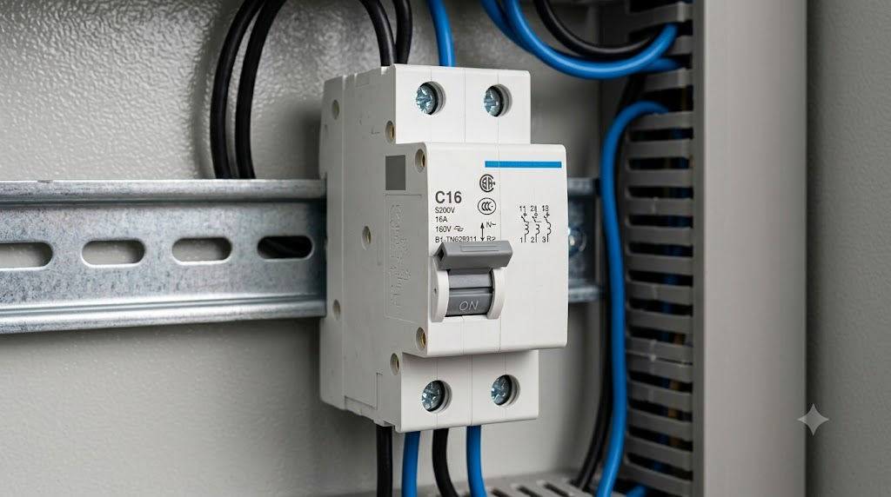
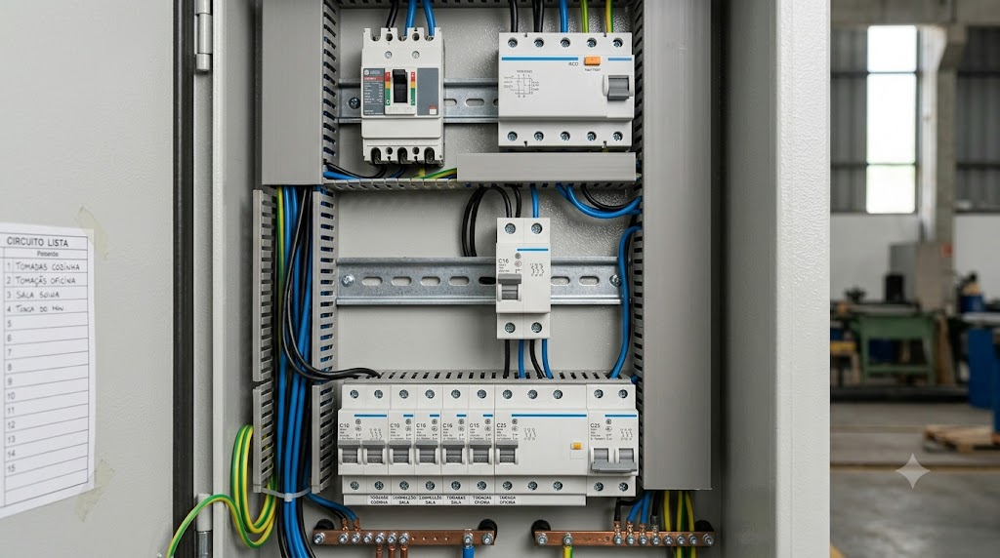

Disjuntor
Dispositivo de segurança eletromecânico que protege as instalações elétricas contra sobrecargas e curtos-circuitos.
Conceito e Aplicação
O disjuntor é um dispositivo utilizado para proteger circuitos elétricos contra sobrecargas e curtos-circuitos. Quando detecta uma anomalia na corrente elétrica, interrompe automaticamente o circuito, prevenindo danos aos equipamentos e riscos de incêndio.
- Proteção contra curto-circuito;
- Proteção contra sobrecarga;
- Permite desligamento manual;
- Utilizado em residências e indústrias;
Informações Complementares

Funcionamento
O disjuntor interrompe automaticamente o circuito quando detecta uma sobrecarga ou curto-circuito.

Aplicações
Dispositivos de proteção e manobra que interrompem a corrente elétrica em situações de sobrecarga ou curto-circuito.

Vantagens
A principal vantagem é interromper automaticamente o fluxo de corrente em casos de sobrecarga ou curto-circuito.
Empresas
A WEG, a Siemens e a Schneider Electric são referências globais no setor elétrico, atuando na fabricação de disjuntores para proteção de instalações residenciais, comerciais e industriais.
: Empresa brasileira reconhecida mundialmente pela fabricação de equipamentos elétricos. Oferece soluções para proteção de circuitos em aplicações residenciais, comerciais e industriais.
: Multinacional alemã que desenvolve tecnologias para energia e automação. Seus disjuntores são amplamente utilizados em sistemas de distribuição elétrica.
: Líder global em gestão de energia e automação, com soluções completas de proteção de circuitos para todos os segmentos.